![logo]()
![logo]()
Blog Trastering
¿Te desbordan los cierres de campaña? Así te ayuda un almacén con el stock estaciona
Hay un momento justo después de cada campaña , como pueden ser las rebajas, los cambios de temporada o acciones puntuales como el Día de la Madre o las comuniones, que todo el mundo conoce pero nadie nombra: cuando el ritmo baja, miras alrededor y te das cuenta de que el sitio sigue lleno. Cajas que no encontraron comprador, decoración que ya no encaja con el mes que toca, embalajes especiales que sobraron. Todo eso sigue ahí, ocupando los metros que tú necesitas para lo que viene.
Seguir leyendo…La flexibilidad de Trastering: cómo nos adaptamos a las necesidades cambiantes de tu negocio
Hay algo que casi todos los negocios descubren tarde: el problema no es el espacio, es cuándo lo necesitas. Porque no es lo mismo un mes tranquilo que una temporada fuerte, como Black Friday, rebajas o una promoción puntual. Tampoco es lo mismo tener 20 pedidos al día que de repente pasar a 200.. Y claro, el almacén no siempre acompaña. Ahí es donde empiezan los parches: cajas en la oficina, stock mal organizado, o pagar por metros que realmente no estás usando.
Seguir leyendo…Cómo liberar espacio si trabajas en una oficina compartida
Trabajar en una oficina compartida tiene muchas ventajas: es flexible, económica y te permite rodearte de otros profesionales. Pero hay algo que suele pasarse por alto hasta que empieza a estorbar (literalmente): el espacio. ¿Dónde guardas todo lo que no necesitas para tu actividad diaria sin invadir zonas comunes ni dar mala imagen? Si vas cargado cada día con herramientas, material promocional, carpetas o muestras, esta lectura es para ti.
Seguir leyendo…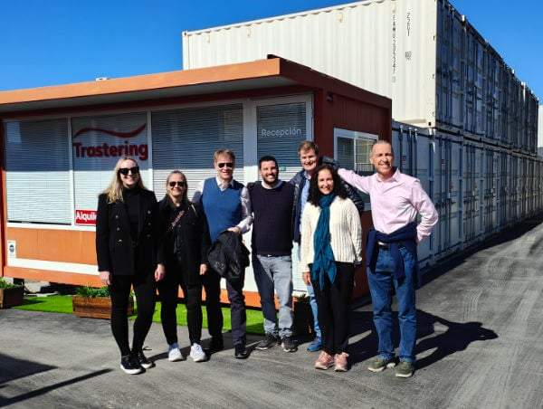
Diez años creciendo con espacio para mucho más
Trastering no nació de un plan perfecto, nació de una necesidad real, una oportunidad bien leída y una visión valiente. Arnaud Ripert y Cecilia Rimoldi, con una amplia trayectoria en el sector del self-storage, decidieron apostar por un modelo poco convencional en aquel momento: el uso de contenedores marítimos como sistema de almacenaje.
La idea había empezado a tomar forma en Francia con la marca Gardetout, fruto de la colaboración con antiguos competidores noruegos. La ventaja era clara: los contenedores ofrecían una solución más segura, más práctica y escalable sin depender de grandes inversiones ni estructuras tradicionales.
Seguir leyendo…Coworking vs. oficina propia: ¿Qué opción te conviene más si trabajas por tu cuenta?
No todo el mundo necesita lo mismo para trabajar. Hay quien prefiere moverse ligero, sin ataduras, y quien necesita estabilidad y control sobre su espacio. Si eres autónomo o llevas un negocio pequeño, probablemente te has planteado si te conviene más alquilar una oficina o instalarte en un coworking. Y, en medio de todo esto, aparece una tercera pieza clave: cómo organizar lo que no usas a diario, pero necesitas tener a mano.
Seguir leyendo…¿Cómo guardar libros en cajas sin dañarlos? Guía paso a paso para conservarlos
Si estás haciendo una mudanza, ordenando tu casa o simplemente te estás quedando sin estanterías, llega un momento en el que toca tomar una decisión:
¿qué hago con todos estos libros?
Deshacerse de ellos no suele ser una opción. Y dejarlos mal apilados en cualquier rincón, tampoco. Los libros ocupan espacio, pero también tienen valor historias, recuerdos, conocimiento. Guardarlos bien es una forma de cuidarlos, y de cuidarte también.
Seguir leyendo…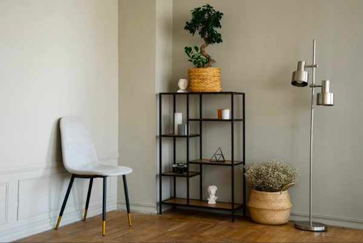
Minimalismo en casa: cómo reducir el desorden sin deshacerte de todo
No es que tengas demasiadas cosas. Es que tu casa ya no puede con todo. Y no hablamos solo de metros cuadrados: hablamos de energía. Lo que está por medio, pesa. No siempre por volumen, pero sí por lo que exige: mover, ordenar, guardar, decidir.
El minimalismo en casa no es una filosofía decorativa. Es una forma práctica de dejar de vivir en estado de saturación constante. Y no pasa por tirar lo que valoras, sino por decidir qué permanece a la vista y qué no necesita estar contigo cada día.
Seguir leyendo…Tendencias en negocios online: ¿Cómo adaptarse en 2025?
En Trastering lo vemos cada día: los negocios que encuentran su ritmo no son los que lo cambian todo, sino los que saben organizarse mejor. Un espacio extra, algo de tecnología práctica y mucho foco pueden marcar la diferencia.
Seguir leyendo…Menos papeles, más foco: cómo reducir el estrés administrativo siendo autónomo
Facturas que se acumulan, carpetas abiertas en la mesa, llamadas que interrumpen y materiales que nunca tienen un sitio fijo. Para muchos autónomos, el verdadero desgaste no viene solo del trabajo, también de la carga administrativa que nunca termina. Esa sensación de que siempre hay algo pendiente mina la concentración y aumenta el estrés. La cuestión no es trabajar más horas, es quitarte de encima lo que sobra para recuperar claridad y foco.
Seguir leyendo…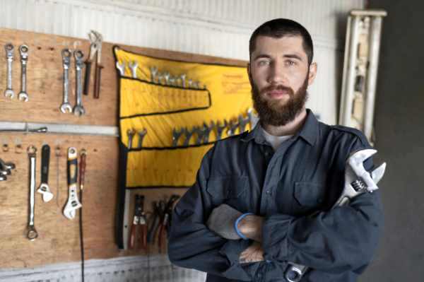
Organizar herramientas: cómo un almacén mejora el orden frente a usar la furgoneta
Muchos profesionales siguen dejando sus herramientas en la furgoneta al terminar la jornada. Es rápido, sí, pero trae consigo problemas diarios: falta de espacio, desorden, riesgo de robo y un desgaste innecesario del material. Un pequeño almacén pensado para el almacenaje de herramientas ofrece justo lo contrario: la posibilidad de organizar herramientas con orden, seguridad y accesibilidad, mejorando tanto el trabajo como la tranquilidad personal.
Seguir leyendo…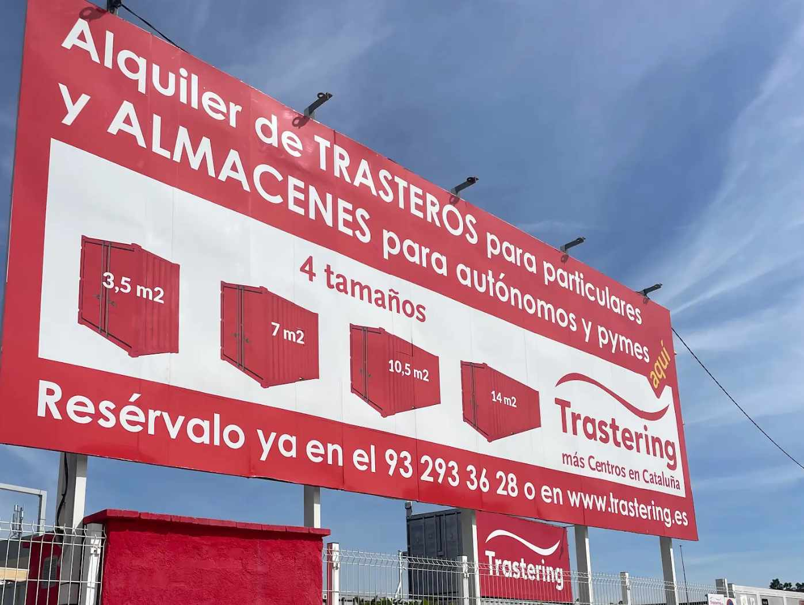
Ampliamos nuestro Centro de Gavá-Castelldefels: más espacio para ti y tu negocio
Si recientemente has contactado con Trastering Gavá-Castelldefels, es muy posible que te hayas encontrado con un problema: casi no nos quedaban trasteros disponibles. Teníamos la casa llena. Es por eso que nos hicimos con el terreno de al lado, y hemos duplicado nuestro tamaño para tener disponibilidad.
Seguir leyendo…Cómo organizar tu oficina (y dónde guardar lo que no te cabe)
Estanterías llenas, documentos que ya no sabes dónde meter, muebles auxiliares que ocupan más de lo que aportan… Con el paso del tiempo, es habitual que las oficinas empiecen a quedarse pequeñas. Ya sea por una mudanza, una reestructuración del equipo o simplemente por acumulación, llega un momento en que reorganizar no es opcional: es necesario.
Seguir leyendo…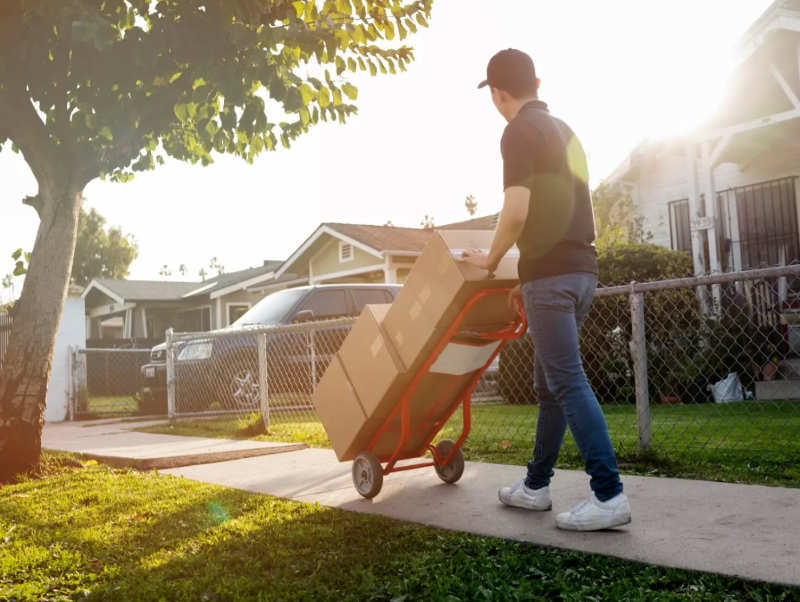
¿Cuánto cuesta una mudanza? Factores clave y consejos para ahorrar
¿Estás a punto de mudarte y no sabes cuánto puede costarte el traslado? Seguramente ya habrás comprobado que obtener un precio claro no es tan fácil: la mayoría de webs te invitan a dejar tus datos o llamar para recibir un presupuesto personalizado. Aquí vamos a hacer algo distinto: contarte de forma clara y realista cuánto cuesta una mudanza, sea grande o pequeña, en Madrid, Barcelona o incluso a otra ciudad internacional.
Seguir leyendo…Seguridad en trasteros para profesionales: protegiendo documentos y equipos valiosos
¿Tomaste la decisión de contratar un trastero para tu negocio y quieres asegurarte de tener el trastero más seguro para tus necesidades de almacenaje de documentos, herramientas, equipos, stock o mobiliario? Aquí te indico algunos temas que debes tener en cuenta.
Seguir leyendo…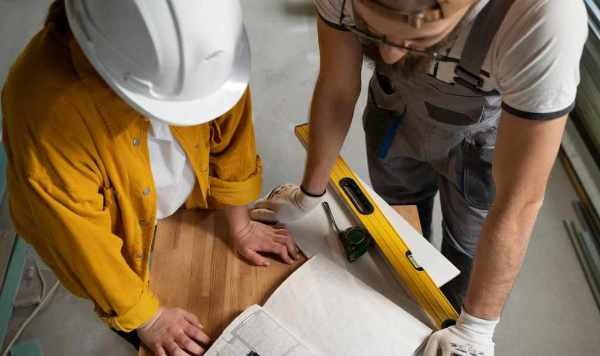
Trastering: El mejor trastero para constructores
En Trastering, te ofrecemos más que un simple espacio de almacenamiento: gracias a la calidad de nuestros contenedores marítimos, nuestros trasteros son muy resistentes y duraderos, y soportan perfectamente las inclemencias del tiempo. Al ser muy seguros, fácilmente accesibles y flexibles, nuestros trasteros de alquiler son el espacio perfecto para todas tus necesidades de almacenaje en la Comunidad de Madrid y la provincia de Barcelona.
Seguir leyendo…Consejos para una mudanza de oficina sin estrés
La mudanza de oficina es un proceso que puede parecer abrumador, pero con la planificación adecuada, puede ser una transición fluida y sin estrés. Tanto si se trata de una mudanza de despachos dentro de las mismas oficinas como de un traslado de oficina a una nueva ubicación, hay una serie de pasos que pueden garantizar el éxito del proceso.
Seguir leyendo…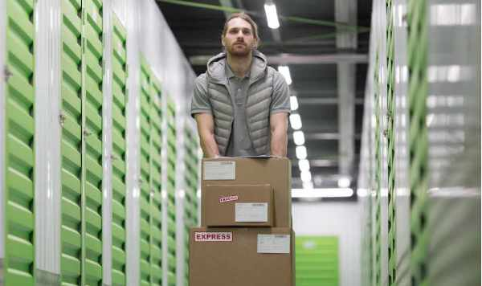
Ventajas del Formato Trastering vs Trastero Tradicional para Empresas
En un mundo empresarial cada vez más dinámico y exigente, la gestión eficiente del espacio de almacenamiento se ha convertido en una necesidad crucial para las empresas. En este contexto, los servicios de Trastering han emergido como una alternativa moderna y mejorada frente a los trasteros tradicionales. A continuación, exploraremos las ventajas clave que ofrece el formato Trastering, comparándolo con las limitaciones de los trasteros tradicionales.
Seguir leyendo…¿Dónde Guardar tus Herramientas y Maquinaria de Trabajo?
Si eres un profesional del sector de la construcción, como albañil, carpintero, fontanero o electricista, seguramente has acumulado una gran cantidad de herramientas y maquinaria a lo largo del tiempo. Saber dónde guardar herramientas y máquinas de forma segura y accesible es fundamental para el éxito de tu negocio. En este artículo, explicaremos cómo los trasteros de Trastering pueden ser la solución ideal para guardar herramientas y maquinaria, ofreciendo una opción práctica, segura y económica.
Seguir leyendo…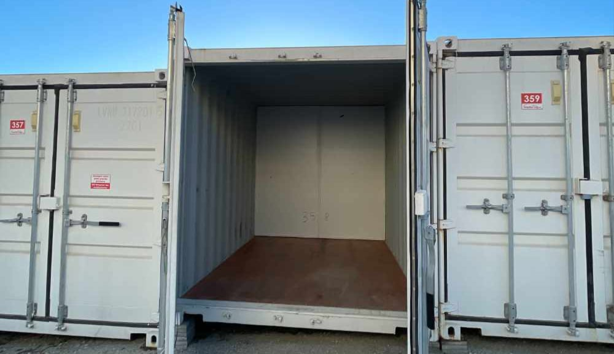
Razones clave para que tu empresa alquile un mini almacén
En el mundo empresarial actual, la gestión eficiente del espacio es fundamental. Alquilar un mini almacén puede ser la solución perfecta para tu empresa, permitiéndote optimizar recursos y mejorar la operatividad. En Trastering, ofrecemos mini almacenes para empresas, así que en este artículo te queremos explicar por qué elegirnos puede ser la mejor decisión para tu negocio.
Seguir leyendo…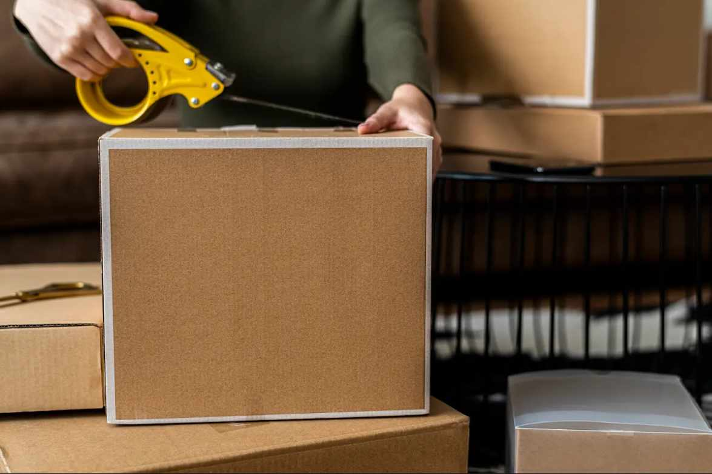
Cómo ordenar el inventario de tu empresa en un trastero
Organizar el inventario de tu empresa en un trastero puede ser un desafío, pero, con una planificación adecuada y algunos métodos probados, puedes optimizar el espacio y mejorar la eficiencia operativa. Por ello, en este artículo te damos algunos consejos prácticos para tu inventario en un trastero de manera efectiva y mantenerlo accesible y bien organizado. ¡Vamos allá!
Seguir leyendo…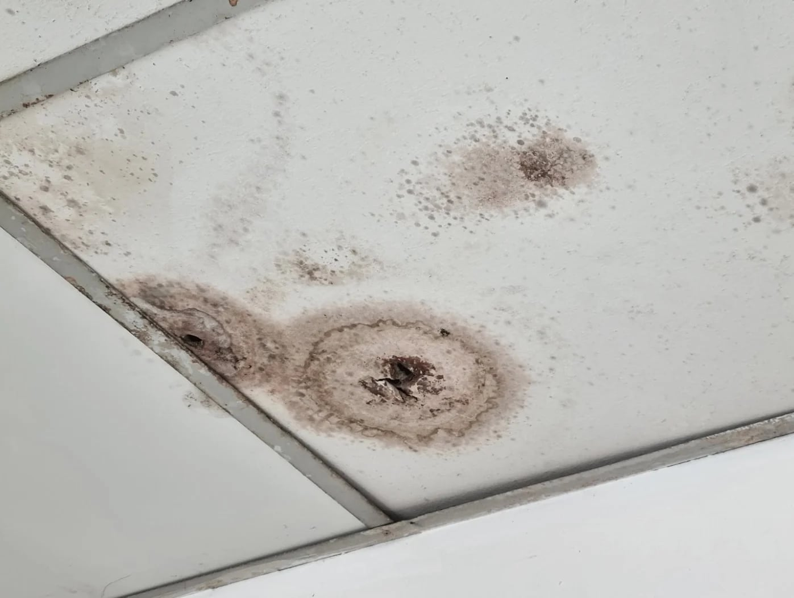
Cómo evitar y quitar la humedad de los trasteros
Un trastero con humedad puede ser verdaderamente molesto, dado que podría generar mal olor y la presencia de moho, causando daños a textiles, muebles y otros objetos que puedas tener almacenados. Si te preocupa, en el siguiente artículo te contamos cómo saber si hay humedad en tu trastero, las causas comunes y cómo evitarlo.
Seguir leyendo…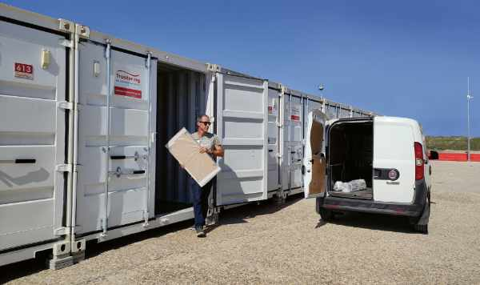
Cuanto cuesta alquilar un trastero
Una mudanza requiere de mucha organización. Es necesario tener en cuenta una serie de factores y seguir un orden para que todo salga bien. Las pérdidas, las roturas o tener que dar más viajes que los programados son algunos de los problemas más comunes. Te ayudaremos a evitarlos con este checklist mudanza..
Seguir leyendo…Cómo vaciar un trastero
Vaciar un trastero puede parecer misión imposible, pero ya te adelantamos que es completamente viable. Tan solo tienes que ir poco a poco, de forma organizada y armarte de paciencia. En el siguiente artículo te contamos cómo vaciar un trastero paso a paso y sin morir en el intento.
Seguir leyendo…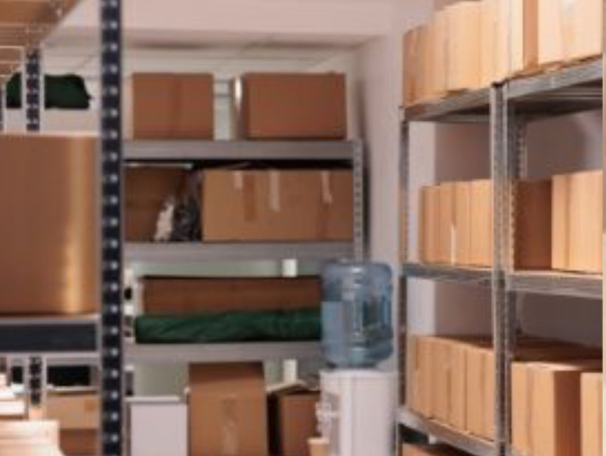
Cómo organizar un almacén de forma eficiente
Gran parte del éxito de cualquier empresa que venda productos físicos pasa por hacer un correcto almacenamiento. Por ello, en este artículo de Trastering te vamos a contar algunos trucos para organizar el almacén de tu negocio y así aprovechar el espacio al máximo y mantener una buena productividad y eficiencia en el trabajo.
Seguir leyendo…Cómo organizar un trastero para maximizar el espacio
Los trasteros son una pieza clave para el almacenamiento de muebles y objetos que necesitas guardar. Sin embargo, disponer de ese espacio no sirve de nada si no sabes cómo organizar un trastero.
Por este motivo, en este artículo te queremos contar algunos trucos para organizar un trastero de la manera más eficaz posible
Seguir leyendo…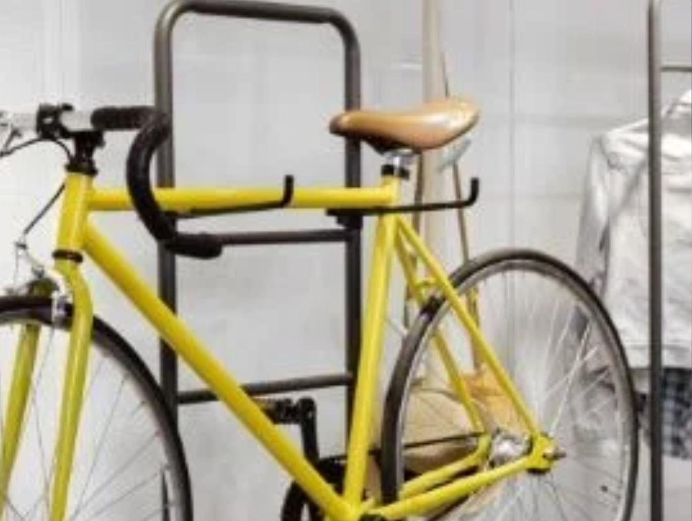
Trucos para colgar bicicletas en el trastero
Uno de los objetos más comunes en un trastero son las bicicletas, ya que no suelen caber en casa. Además, hay que tener en cuenta que no se deben aparcar en el trastero sin más, ya que pueden estorbar al intentar buscar otros objetos o, incluso, pueden ser dañadas sin querer al mover otros elementos dentro del trastero. Además, es importante guardar las bicicletas correctamente para que las ruedas estén protegidas y no se deshinchen o desgasten, por lo que lo más recomendable es colgarlas.
Sin embargo, colgar bicicletas en un trastero puede ser un desafío, especialmente si el espacio es limitado. Para aprovechar al máximo el área disponible y mantener las bicicletas seguras y ordenadas, es fundamental utilizar trucos inteligentes para colgarlas. En este artículo de Trastering te presentamos algunos trucos efectivos que te ayudarán a organizar tu trastero y tus bicicletas sin problemas.
¡Vamos allá!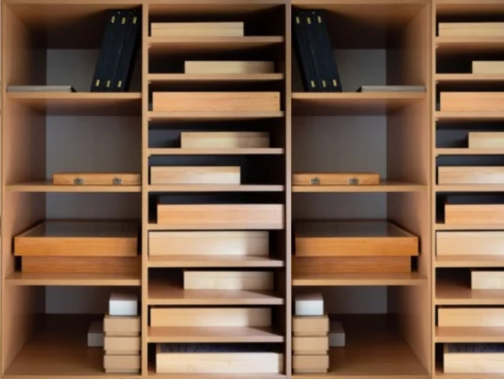
TOP Mejores Muebles para Trasteros
Los muebles para trasteros son claves para un almacenaje seguro y ordenado. Cuando guardas pertenencias que vas a tardar tiempo en utilizar es importante que lo hagas con orden. Así cuando las busques de nuevo las encontrarás rápidamente y sin tener que mover decenas de objetos para encontrar el que te interesa.
¡Vamos allá!Limpieza de Trasteros: ¿Cómo Hacerla?
Los trasteros son espacios que utilizamos para el almacenamiento de productos, enseres y pertenencias que no necesitamos usar de forma habitual. Pero al igual que otros espacios, la limpieza de trasteros es esencial para evitar que el polvo y la suciedad se acumulen sobre la superficie de tus pertenencias. En este post te ofrecemos algunos consejos de gran utilidad para que mantengas este espacio impoluto.
¡Vamos allá!
Funciones básicas de un almacén. ¿Qué saber?
El uso de un almacén es habitual por parte de autónomos, profesionales y pymes en el día a día de su actividad empresarial. Pero, antes de contratar el alquiler almacén o la compra del mismo, es importante conocer las funciones básicas de un almacén para determinar si es lo que la empresa o profesional necesita para su negocio.
¡Vamos allá!10 Regalos Originales para Mudanza
Afrontar una mudanza es siempre complicado. Empezar en un nuevo hogar implica multitud de cambios, pero por suerte siempre podemos contar con la ayuda de familiares y amigos. Si alguien de tu entorno está en pleno proceso de mudanzas Barcelona, no te puedes olvidar de entregar regalos originales para mudanza como gesto para desear suerte en esta nueva etapa.
¡Vamos allá!Almacén para Tienda Online: Ventajas y Consejos
El auge de las compras por Internet ha llevado a muchas empresas a cambiar su estrategia de ventas. No sólo han tenido que apoyarse en plataformas de venta o crear su propia tienda en línea, también se han visto obligados a reformar sus instalaciones para aumentar su stock y reducir los tiempos de entrega. Otra solución al problema del almacenaje es contratar un almacén para tienda online.
¡Vamos allá!Consejos para Evitar un Almacén Caótico
Un almacén caótico es un problema común al que se enfrenta cualquiera que tiene un espacio de almacenamiento. Es natural acumular cosas que se van dejando en cualquier rincón y ocupan el lugar que no le corresponde. Te daremos algunos consejos para que esto no ocurra.
¡Vamos allá!Trasteros para Estudiantes: ¿Qué Tener en Cuenta?
Muchos alumnos se desplazan a otras provincias para continuar su formación. En la mayoría de los casos, alquilan una habitación o un piso junto con otros compañeros de estudios. Al llegar el verano, dejan la vivienda y se enfrentan a un problema: ¿qué hacer con las cosas que se han llevado o han ido acumulando durante el curso? Para darles una solución ventajosa, se han habilitado los trasteros para estudiantes. Te mostraremos qué ventajas tienen y te daremos algunos consejos prácticos.
¡Vamos allá!¿Cómo Justificar Días de Mudanza en tu Trabajo?
Cambiar de domicilio es una tarea que requiere esfuerzo, una importante inversión económica y tiempo. Además, supone una importante carga emocional. Es conveniente estar centrado únicamente en el cambio cuando llega el momento y tomarte un día completo para esta labor. ¿Sabes cómo justificar días de mudanza en tu empresa?
¡Vamos allá!Cerradura Trastero. Información Útil
La cerradura es una pieza vital para los contenedores y trasteros. Como ya sabes, los hay de muchos tipos, con diseños diferentes para que encajen en cualquier cerrojo. Te contaremos cómo debe ser una buena cerradura trastero y las diferentes tipologías existentes.
¡Vamos allá!Almacén Características. Descúbrelas
Los almacenes pueden ser de muchos tipos según sus características y cómo están equipados. no son solo grandes o pequeños, también los hay con diferentes formas o funciones que los hacen aptos para diferentes usos. Te vamos a hablar de cómo son, así podrás elegir el que mejor se adapte a ti o a tu empresa. Por eso el siguiente tema es “Almacén características”.
¡Vamos allá!Inundaciones en Garajes y Trasteros: ¿Cómo Evitarlas?
Cuando el cambio climático y la construcción de viviendas en lugares que no son óptimos se juntan, comienzan a producirse inundaciones en garajes y trasteros.
Al estar bajo tierra, el riesgo de que sean anegados por el agua al caer una lluvia torrencial es muy elevado. ¿Qué se puede hacer para evitarlas? En este artículo encontrarás algunos consejos para evitar entrada agua garaje. Quédate y descúbrelos todos.
¡Vamos allá!10 Claves en tu Checklist Mudanza
Una mudanza requiere de mucha organización. Es necesario tener en cuenta una serie de factores y seguir un orden para que todo salga bien. Las pérdidas, las roturas o tener que dar más viajes que los programados son algunos de los problemas más comunes. Te ayudaremos a evitarlos con este checklist mudanza..
¡Vamos allá!Consulta precios y reserva tu trastero gratuitamente ahora
Tienes que seleccionar una opción antes
Tienes que seleccionar un centro para continuar